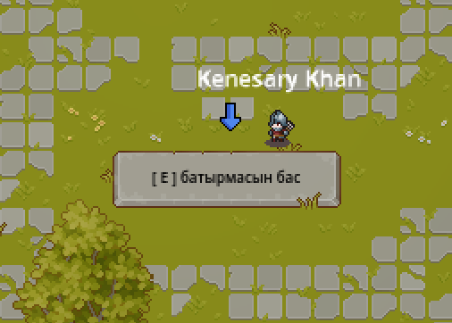

Сәлем сен 3 көк нүктенің 1-еуін таптың. Қазіргі станциян Ақмола бекінісі.

Сен осы жердесіңКенесары Қасымұлы бастаған қазақ халқының ұлт-азаттық көтерілісі тарихындағы ең жарқын әрі маңызды оқиғалардың бірі — 1838 жылғы Ақмола бекінісіне жасалған шабуыл. Патша үкіметінің Сарыарқа төсіндегі ең мықты әскери-әкімшілік тірегі болған бұл қамал қазақ жерлерін отарлау саясатының басты құралына айналған еді. Кенесары хан бұл бекіністі жою арқылы Ресей империясының даладағы ықпалын әлсіретіп, бытыраңқы қазақ руларын бір тудың астына біріктіруді басты мақсат етіп қойды.Ақмола бекінісі мықты қорғалған болатын. Оның айналасында терең орлар қазылып, биік дуалдар тұрғызылған еді. Ішінде зеңбіректермен қаруланған тұрақты орыс гарнизоны және сұлтан Қоңырқұлжа Құдаймендіұлы бастаған патша үкіметіне берілген жергілікті жасақтар орналасты. Дегенмен, Кенесарының әскери таланты мен қазақ батырларының асқан ерлігі бұл кедергілерді бұзып өтуге қауқарлы болды. Шабуылға шамамен 12 мыңға жуық қазақ сарбазы қатысты.
1838 жылдың 7 тамызында таңсәріде басталған шабуыл өте қилы әрі қанды болды. Кенесарының садақшылары мен найзагерлері жаудың оқ боранына қарамастан алға ұмтылды. Басығара батыр бастаған жасақ қорғанның орларынан өтіп, алғашқылардың бірі болып қабырғаға бұзып кірді. Осы ұрыста Басығара батыр ерлікпен қаза тапты. Бұл жағдай сарбаздардың рухын түсірмеді, керісінше, Ағыбай, Иман (Амангелді батырдың атасы), Бұғыбай, Наурызбай батырлар шабуылды одан әрі үдетті.
.jpeg) ХІХ ғасырдағы Ақмола бекінісінің көрінісі мен қорғаныс бекіністері
ХІХ ғасырдағы Ақмола бекінісінің көрінісі мен қорғаныс бекіністері
Түнге қарай қазақ жасақтары арнайы дайындалған садақ оқтарының басына жанғыш заттар байлап, бекініс ішіне атты. Ағаштан салынған қамал лезде отқа оранып, іштегі гарнизон арасында дүрбелең басталды. Осы сәтті пайдаланған Кенесары әскері бекіністі толықтай басып алды. Патша әскерінің аман қалған бөлігі мен Қоңырқұлжа түн қараңғылығын жамылып әрең қашып құтылды.
Ақмола бекінісін алудың тарихи маңызы өте зор болды. Бұл жеңіс Кенесарының қолбасшылық даңқын бүкіл қазақ даласына таратты. Халықтың рухы көтеріліп, көтеріліске жаңа рулар келіп қосыла бастады. Сонымен қатар, бұл оқиға патша үкіметіне қазақ халқының өз тәуелсіздігі үшін соңғы тамшы қаны қалғанша күресуге дайын екенін айқын көрсеткен тарихи сәт еді.